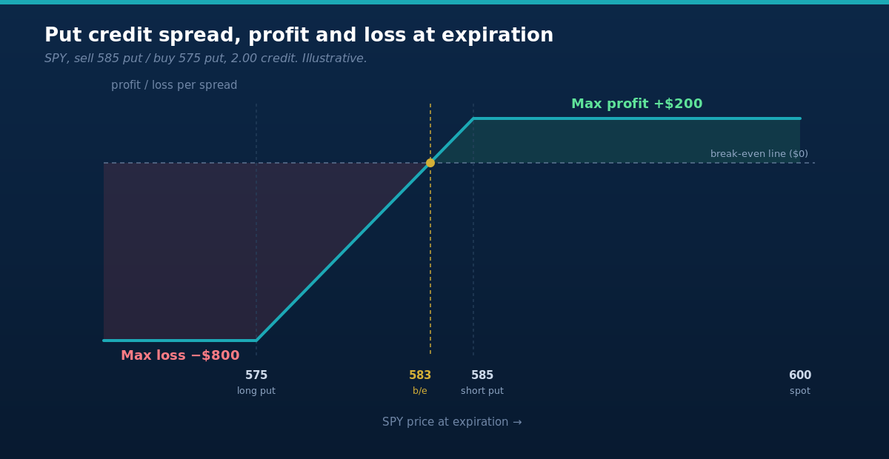

Most explanations of credit spreads lose you in the first thirty seconds. They open with delta and theta and a Greek alphabet you did not sign up for, and by the time they get to what the trade actually does, you have already decided options are not for you. I did the same thing the first time someone tried to teach me. So let me strip it all the way down and build it back up with one example, no jargon wall.
Here is the whole idea in one sentence. A credit spread is a bet that a stock will not get past a certain price by a certain date, and you get paid up front to make it.
That is it. The rest is just learning to read the numbers.
Getting paid instead of paying
When you buy an option, you pay money and you need the stock to move, and to move enough, and to move soon, or the clock eats you alive. Most options that get bought expire worthless. That is not a knock on anyone, it is just what the data says happens.
A credit spread puts you on the other side of that. Instead of paying for a move, you collect cash for being willing to take a defined risk, and time decay works in your favor instead of against you. You do not need the stock to go anywhere. You need it to stay on the right side of a line you picked. Up a little, down a little, sideways, all of those can win.
The word "credit" just means money lands in your account the moment you open the trade. The word "spread" means you are doing two things at once, selling one option and buying another as a seatbelt. The one you sell is where the income comes from. The one you buy is what caps your loss if you are wrong, so a bad day stays a bruise instead of a catastrophe.
The bullish version: a put credit spread
Say SPY is trading at 600 and I think it holds up over the next month, or at least does not fall apart. I do not need it to rally. I just need it to stay above a level.
So I look below the current price and I sell a put, then I buy a cheaper put further below it for protection. The chain at the top of this post marks both spreads, all four strikes at once.
On that chain I sell the 585 put for 4.00 and buy the 575 put for 2.00. The difference, 2.00, is my credit. Since one option contract covers 100 shares, that is 200 dollars landing in my account today.
Now the four numbers that run the whole trade.
The credit is 2.00, or 200 dollars, and that is the most I can make. If SPY is sitting anywhere above 585 when these expire, both puts expire worthless, I keep the 200, and the trade is done.
The width between my strikes is 10 points, which is 1000 dollars of capital at stake. My max loss is that width minus the credit I already collected, so 1000 minus 200, which is 800 dollars. That is the worst case, and I knew it before I ever clicked the button.
My breakeven is the short strike minus the credit, 585 minus 2.00, which is 583. So SPY can actually drift down to 583, below where I sold, and I still do not lose money. That cushion is the part most beginners miss. You can be a little wrong and still win.

The bearish version: a call credit spread
Flip the whole thing over and you have the other side. Now I think SPY will not push much higher, so I work above the price instead of below it.
I sell a call above the current price and buy a cheaper call further above it for protection. Same structure, opposite direction. I sell the 615 call for 4.00 and buy the 625 call for 2.00. Credit of 2.00 again, 200 dollars in the account.
The math mirrors the put side exactly. Max profit is the 200 credit, which I keep if SPY finishes anywhere below 615. The width is 10 points, so max loss is 1000 minus 200, or 800 dollars. Breakeven is the short strike plus the credit, 615 plus 2.00, which is 617. SPY can climb a bit past where I sold and I am still fine.
One sells when you lean bullish or neutral. The other sells when you lean bearish or neutral. Neither one needs you to nail the direction. They need you to be right about a line the stock will not cross.
Why the bought option matters
You might be wondering why I bother buying that second option at all. Selling the put or call by itself, naked, collects more money. The answer is the reason I sleep at night.
A naked short option has a loss that runs much further than the premium you took in, and on the wrong day that bill can dwarf the account. The option I buy puts a hard floor under the damage. It costs me some of my credit, sure, but it turns an open-ended risk into a number I can point to before I enter. Every position I hold has a known worst case. That is not a preference, it is the rule the whole Coinfish approach is built on.
Stack them and you have an iron condor
Here is where it gets fun. Run the put credit spread below the price and the call credit spread above it at the same time, on the same underlying, same expiration, and you have built an iron condor.
Now I collect both credits, 400 dollars in this example, and I keep all of it as long as SPY finishes anywhere between 585 and 615. A wide quiet zone where I win, defined risk on both wings. That is a post of its own, and I will write it, but you just learned the two halves it is made of.
How I actually place and manage them
In IBKR Desktop I build these in Strategy Builder so both legs go in as one order. I click the bid at the strike I want to sell and the ask at the strike I want to buy, the platform names the combo, and I send it as a single ticket at the mid price. One fill, one defined-risk position.
A few things I hold to. I sell about 30 to 45 days out, where time decay is meaty but the trade is not yet a coin flip into expiration. I put my short strikes outside the expected move. The whole reason I wrote this post, so the stock has to do something real to threaten me. And I do not ride these to zero. When a spread has handed me most of what it is going to, somewhere around half the max profit, I close it and free up the capital instead of squeezing the last few dollars and carrying the risk for them.
The losers are part of it. A spread goes against me, the stock breaks my line, and I either manage it or take the defined loss I signed up for. I post those here the same as the winners, because a strategy you only see win is a strategy you do not actually understand yet.
Read the line before you sell against it. Know your four numbers before you click. Then let the clock do the work it does whether you are watching or not.